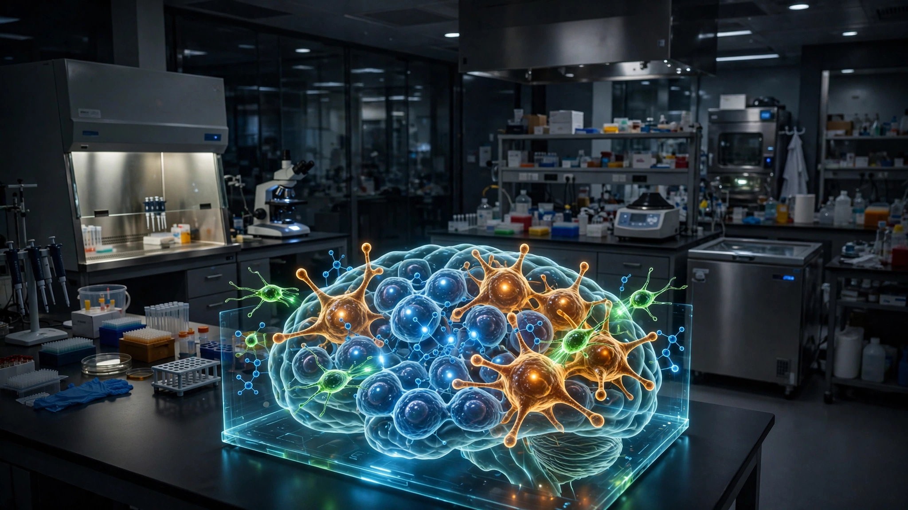

Half of a Glioblastoma Isn't Cancer Cells. 13 Straight CAR-T Trials Targeted Only That Half.
Tumor-associated macrophages make up 30 to 50 percent of glioblastoma mass and actively suppress every immune therapy thrown at them. A Nature paper just found a protein badge they share with the cancer, and a new CAR-T design attacks both compartments at once.

Fifteen thousand Americans hear the word glioblastoma every year, and the median survival after that conversation is 12 to 18 months. Five-year survival sits below 10 percent, and the standard of care has not meaningfully changed in two decades. Roger Stupp published the protocol in 2005, and the same combination of surgery, temozolomide, and radiation remains the default today because nothing has beaten it by more than a few months and every attempt to improve upon it has either failed outright or added marginal weeks at extraordinary cost.
CAR-T cell therapy was supposed to change that. Engineer a patient's own T cells to recognize a tumor antigen, infuse them back, let them hunt. In blood cancers the approach works: complete response rates above 50 percent, durable remissions, six FDA-approved products. Glioblastoma looked like the obvious next frontier. It was not.
A systematic review of all published Phase I trials through mid-2024 counts 13 studies, 128 patients, and six molecular targets: EGFRvIII, IL13Rα2, HER2, GD2, EphA2, and PD-L1. Pooled objective response rate: approximately 5 percent. Eight months of median overall survival. Thirteen experiments, and the same answer came back each time, across different institutions, different CAR constructs, different delivery routes, and different engineering strategies, making it clear that the failure was not in the execution but in the underlying assumption that killing cancer cells alone would be enough.
What went wrong, structurally
Glioblastoma is not a ball of cancer cells. Cut one open. What you find is that 30 to 50 percent of its mass consists of tumor-associated macrophages, immune cells the cancer has recruited and reprogrammed into bodyguards that suppress immune attacks, feed the tumor growth signals, and actively kill therapeutic T cells that try to infiltrate.
Every one of those 13 trials used antigens found only on cancer cells, which means even in the best-case scenario where the CAR-T cells worked perfectly, they were ignoring up to half the hostile cellular mass. Not one addressed the macrophage population constituting up to half the tumor. Half. That structural blind spot, attacking the cancer while leaving the bodyguard army untouched, explains more about the 5 percent response rate than any individual antigen or delivery failure across all thirteen attempts.
The few clinical responses confirmed the problem from the other direction, and they did so in the most direct way possible: by showing that the target antigen vanished after treatment while the macrophage shield remained. In patients who received EGFRvIII-targeted CAR-T and later had surgery, five of seven showed complete loss of the target antigen at recurrence. Gone. Antigen escape is driven by selective pressure: cancer cells without the target survive, and so do the macrophages that were never targeted, free to rebuild the immunosuppressive architecture protecting whatever remains.
GPNMB: one badge, two compartments
A team led by Professor Sheila Singh at King's College London and McMaster University screened glioblastoma tissue for a protein expressed on both cancer cells and corrupted macrophages. They found one. Published July 1 in Nature, their results identified GPNMB (glycoprotein nonmetastatic melanoma protein B) as a dual-compartment antigen that could give engineered T cells a way to recognize and attack both the tumor and the hijacked immune escort simultaneously.
Anti-GPNMB CAR-T cells eliminated all detectable tumors in orthotopic patient-derived xenografts (human tumors in immunodeficient mice) and achieved the same result in syngeneic models (mouse tumors in immunocompetent mice with fully functional immune systems). Both models showed concomitant depletion of GPNMB-positive tumor cells and immunosuppressive myeloid populations, and the fact that both a xenograft and a syngeneic model produced total clearance is unusually rigorous because most CAR-T papers test only xenografts, which lack the immune system interactions needed to validate a dual-compartment strategy like this one.
What the cost math looks like
Standard glioblastoma treatment runs approximately $184,000 for the first 12 months after surgery. Adding Optune extends median survival from 16 to 20.9 months at another $252,000 per year, bringing maximal conventional therapy to about $436,000 for 21 months, or $20,800 per month.
CAR-T all-in costs for blood cancers reach $667,000, and at that price, the therapy needs approximately 24 months of median survival to match Optune's cost-per-month ratio. Hit 36 months and it drops to $13,900 per month, competitive with the basic Stupp protocol that has been standard of care since before the iPhone existed. Hit 48 months, territory no glioblastoma therapy has ever reached, and the number falls to $10,400.
None of those numbers are predictions, and no human has received anti-GPNMB CAR-T for glioblastoma. But the arithmetic establishes what the therapy needs to achieve at different survival thresholds, and that framing is worth having before Phase I data arrives.
Limitations
GPNMB is expressed on normal human osteoclasts, melanocytes, and kidney tubular cells. Whether depleting GPNMB-positive macrophages systemically causes unacceptable off-target toxicity is completely unknown. Xenograft models cannot reveal cytokine release syndrome or neurotoxicity, both common CAR-T complications that would be especially dangerous inside the skull, and syngeneic models use mouse immune systems that are informative but not human and cannot address the separate challenge of manufacturing functional CAR-T cells from GBM patients who are typically immunocompromised and on corticosteroids.
Why most preclinical cancer results never reach patients
Here is the strongest case for skepticism, stated at full strength: preclinical tumor eradication in mouse models is the single most common result in cancer research and simultaneously the single worst predictor of clinical success, a ratio so brutal that oncologists have a shorthand for it: mice lie. Xenograft models overstate efficacy because the host has no immune system, and syngeneic models use mouse tumors that do not fully recapitulate human glioblastoma. Dozens of constructs have achieved complete eradication in preclinical solid-tumor models. Zero durable clinical responses. Ever.
What makes the GPNMB data worth tracking is not the eradication itself but the mechanism: this is the first CAR-T strategy designed to collapse both compartments of the glioblastoma ecosystem, and that represents a genuinely new idea in a field recycling the same single-compartment approach for a decade. If the dual-compartment hypothesis is correct, all 13 prior trials were structurally incapable of producing durable responses regardless of engineering, delivery route, or target antigen.
What to watch next
Clinical trials are not imminent, and the regulatory sequence that must come first is long: safety validation against normal GPNMB-expressing tissues, IND-enabling studies, manufacturing optimization, Phase I design. Two to four years minimum before first-in-human dosing.
For oncologists managing glioblastoma patients today, nothing changes. Stupp protocol plus Optune where appropriate remains the standard until something survives the leap from mouse to human trial. For researchers designing the next round of solid-tumor CAR-T trials, the paper's most provocative claim is not about GPNMB itself but about antigen selection philosophy: if myeloid-rich solid tumors require dual-compartment targeting to produce durable responses, then every single-compartment CAR-T trial currently enrolling patients is running the wrong experiment.
For families dealing with a glioblastoma diagnosis: a novel strategy has produced the strongest preclinical evidence to date against a disease that has resisted every engineered cell product tested. Preclinical is not clinical, and mice are not people. But 128 patients across 13 trials proved that the old approach, targeting only the cancer cells while leaving their macrophage bodyguards intact, does not work. Now we know why.